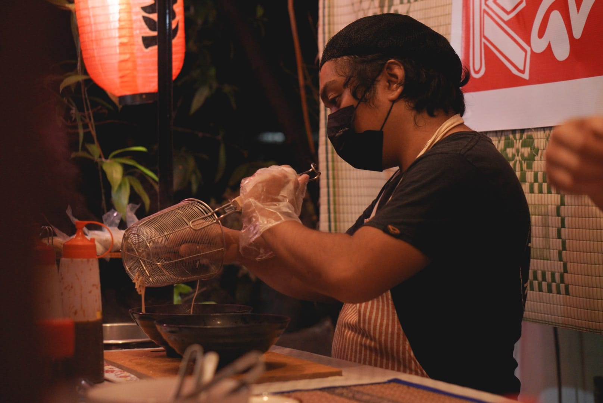
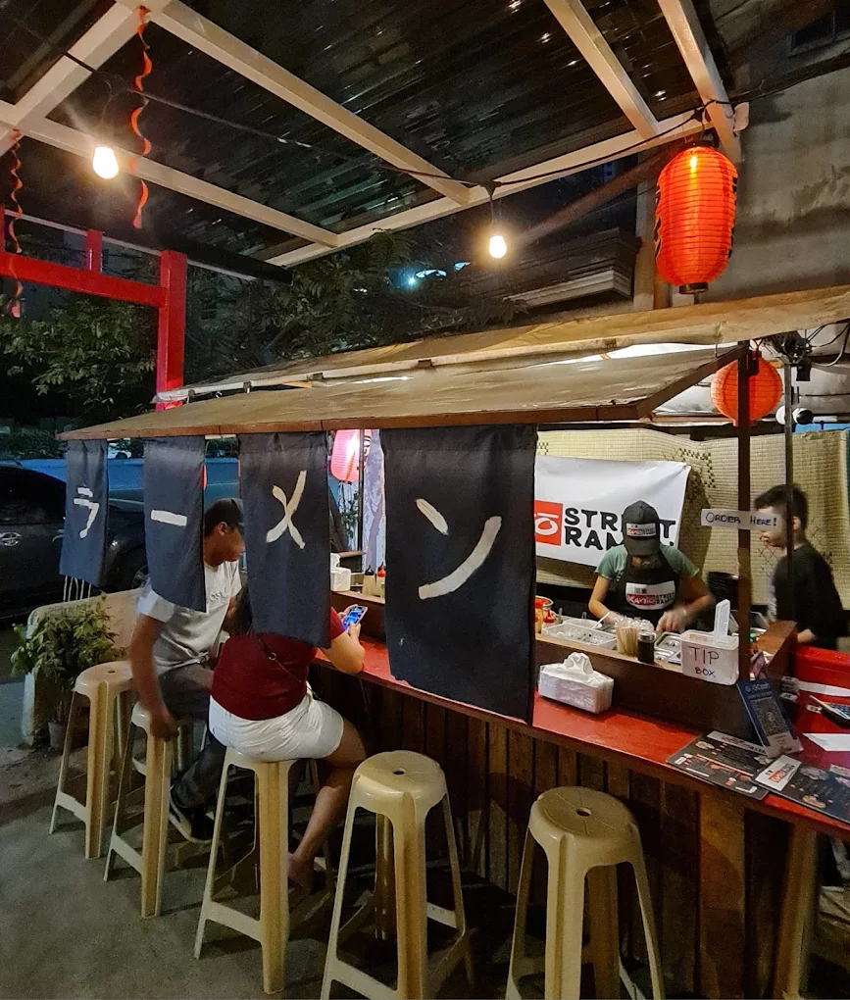

March 2022 《Pusok》 LAPU-LAPU CITY – 1ST STORE OPENED along Mustang Road, quickly became a weekend favorite.
May 2022 《Escario》 CEBU CITY – 2ND STORE OPENED near Escario Street, known for its outdoor street ramen vibe.
Late 2023 《Tabunok》 TALISAY CITY – 3RD STORE ANNOUNCED along San Isidro Road, next to Izumi Motor Parts.
Ongoing COMMUNITY RECOGNITION – Consistent 4.5★ reviews and praised as “pinakasulit na ramen” by Cebu locals.

Kanto Street Ramen was launched in Cebu by a group of entrepreneurs in 2022, though specific names are not publicly available. The concept was inspired by Japanese street food, and the owners have infused a unique personal touch into their menu, particularly their top four best-selling ramen flavors, including the Tonkotsu Shoyu. According to SunStar, the owners collaborated to develop these flavors, utilizing ingredients sourced from Japan.
Kanto Street Ramen has expanded to multiple locations, including Mandaue, Lapu-Lapu CityCebu City, and Talisay City. The Mandaue branch is located on P. Ouano Road, across froJGVill bldg, and near KFC. In Lapu-Lapu, it can be found on Mustang, Pusok, near Julie'Bakeshop. The Cebu City branch is on Don Jose Avila St., across from House of Lechonaccording to Food Craving Reviews. The Talisay City branch is on San Isidro Rd., Tabunoknext to Izumi Motor Parts.

At Kanto Street Ramen, ramen is more than just a dish—it’s a street-side experience born from a deep love of Japanese tradition and reimagined for the Cebuano taste. Our bowls are carefully crafted with five key elements: a flavorful tare (sauce), rich slow-cooked broth, handmade noodles, aromatic oils, and bold toppings. We offer various noodle types—from thick wheat to spicy red—so you can enjoy your ramen, your way. Starting at only ₱129, each bowl is made with precision and passion. Since opening in 2022, we’ve been committed to bringing premium yet affordable ramen to every corner of Cebu, one explosive bowl at a time.
Kanto isn’t just a ramen stall—it’s a community. Our name reflects where we serve: on the “kanto” (Filipino for street corner), where anyone can gather for a hearty bowl of comfort. Born in Cebu City and now expanding to Lapu-Lapu and Mandaue, Kanto Street Ramen blends Japanese techniques with local ingredients sourced from nearby markets and producers. Our open-air setup captures the spirit of Japanese yatai (street stalls) while keeping everything affordable and real. With each bowl, we aim to deliver not just taste, but connection—between chef and diner, street and soul. Come hungry. Leave fulfilled.